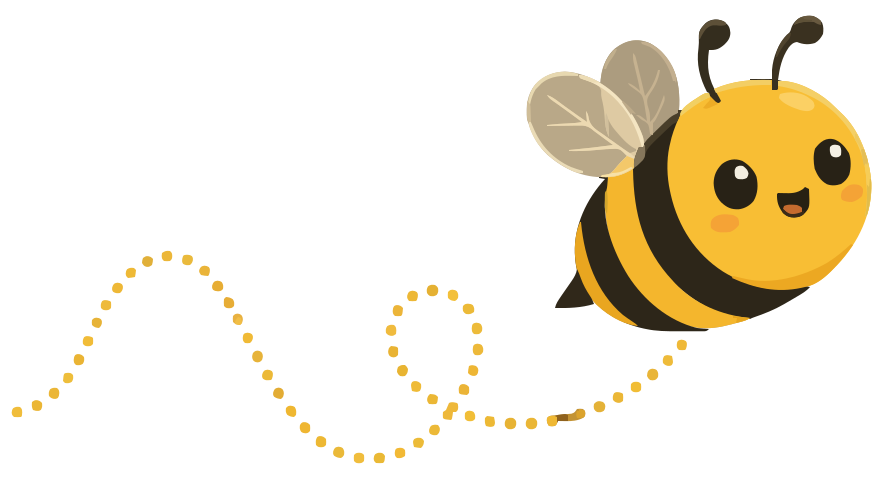

Just murmur.
It writes.
Free and open‑source alternative to Wispr. 2× faster and just as accurate. Nothing leaves your Mac.
- 2×
- faster than cloud dictation, from letting go of the key to text on screen.
- 3×
- faster than typing. Most people type around 40 words a minute and speak around 120+.
- Free
- MIT open source. No account, no subscription, no usage cap.
Twice as fast as Wispr Flow.
No round trip to a server, so your words land the moment you let go.
Three times faster than typing.
Most people type about 40 words a minute and speak 120+.
Nothing goes to the cloud.
Speech and cleanup both run on your Mac, even offline.
- Microphonewhile you hold the key
- Parakeet TDT 0.6Bspeech → words
- Qwen 0.8B, fine‑tunedwords → clean text
- Your cursorpasted in place
Accuracy close to the best cloud dictation.
Both get about 97–98 of every 100 words right.
Talk the way you think. Send it the way you meant it.
Cleans up as you speak.
It trims the words you didn’t mean to say, follows your corrections, and turns lists into lists.
What you said
What MurmurBee typed
um so can we move the sync to tuesday, sorry, wednesday at 3
Can we move the sync to Wednesday at 3?
first the budget second the hiring plan and third uh the offsite
- The budget
- The hiring plan
- The offsite
Knows the context.
It reads the app, the names on screen and your dictionary, all locally.
Hi Siobhan,
Replying to: SiobhanThursday works. I’ll share the Larkspur board before then.
Your dictionaryBest, Mara
Your sign‑offLearns from your edits.
Fix a word once and it’s in your dictionary for next time.
Send the deck to the HalversonHalvorsen team by Friday.
Added “Halvorsen” to dictionary
The best model is the one trained on you.
Import your Wispr Flow history and MurmurBee trains a model on your Mac in about an hour. On my own dictations, it made 44% fewer mistakes than the general model.
- Your Wispr Flow historyimported in one click
- Trains in about an houron your Mac’s GPU, pausing while you dictate
- Your personal modelyour names, your style
From your voice to your cursor,
without leaving your Mac.
-
Hold the key and talk
Hold right ⌥ or fn in any app and speak like you would to a friend. The flow bar listens.
-
Parakeet transcribes on‑device
NVIDIA’s Parakeet speech model turns your audio into words, right on your Mac’s Neural Engine.
-
A tiny local model polishes it
A small language model trims unneeded words, follows your corrections, formats the text, and pastes it where your cursor is.
Your voice stays
on your Mac.
No asterisks. MurmurBee has no servers to send your words to, and no account to tie them to.
-
Nothing leaves your Mac
Your audio and your text are processed on‑device and never sent anywhere.
-
History you control
Your dictation history is stored locally, and you can delete all of it in one click.
-
Open source, so you can check
Every line is on GitHub. Don’t take my word for it: read the code.
Questions, answered.
Is it really free?
Yes. MurmurBee is free and open source. There’s no subscription, no account and no usage limit, because everything runs on your own Mac.
Which Macs does it run on?
Macs with Apple Silicon (M‑series chips) running macOS 15 Sequoia or later.
Which languages does it support?
English today. More languages are planned.
How is it different from Wispr Flow?
MurmurBee is fully local: speech recognition and cleanup both run on your Mac, so nothing goes to a server. It’s also free, open source, and learns your vocabulary on your Mac rather than in the cloud. In my measurements on the same Mac, it was about twice as fast from key release to text.
Does it need an internet connection?
Only once, to download the speech and language models. After that, it works completely offline.
Give your keyboard
a little break.
Free for every Apple Silicon Mac on macOS 15 or later.
Beta First launch: System Settings → Privacy & Security → Open Anyway. Release notes